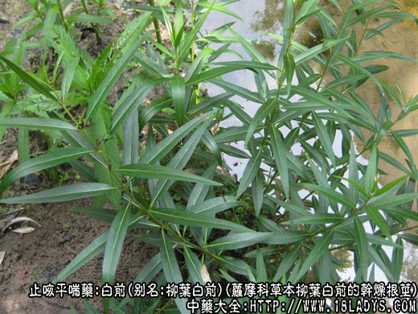

原文连接:https://www.daquan.com/post/2386.html



白前为较常用中药，《名医别录》列为中品。
别名：鹅管白前。
来源：为萝摩科多年生草本植物柳叶白前和芫花叶白前的干燥根及根茎，野生。
产地：主产于浙江、安徽、湖南、湖北、江西、江苏等地。
性状鉴别：1、柳叶白前。根茎及须根相互交结散乱呈团状。根茎呈圆柱形，中空（形如鹅翎管故称鹅管白前），细长有节，节部略膨大，弯曲不直，长短不一，最长者可达10余厘米，直径约2～4毫米，黄棕色。顶端残留灰绿色地上短茎。根茎节部有分歧，并密生纤细须根，黄色或棕色，长达10余厘米，直径不超过0.1毫米，少数约达0.1毫米。质脆易折断，根茎断面中空。气微，味微甘后微苦。
2、芫花叶白前，形态略与柳叶白前相似，但根茎及残留地上茎的节部对生芽及叶柄痕显著，有的根茎较短略呈块状，上面丛生多数细根，但较柳叶白前的根略粗长，长约5～15厘米，直径约0.5～1毫米。余与柳叶白前相同。
以根及根茎色黄粗长，少地上茎者为佳。
主要成分：含皂甙。
药理作用：润肺降气祛痰。
炮制：切咀，生用或蜜制。
性味：辛苦，微温。
归经：入肺经。
功能：降气、消痰、止嗽。
主治：肺气壅实，咳嗽痰多（感冒喘息、慢性支气管炎）。
临床应用：1、用于咳嗽而见肺气壅实，咳痰不爽，喉有吼声、呼吸不畅（如急性支气管炎，肺气肿合并气管炎之咳嗽），取其有降气下痰作用，常配紫菀，半夏等，方如白前汤。
附：与沙参比较：白前的根形和功用颇似北沙参，但长于降气下痰，不如北沙参之养阴清热又略带补性。
用量：4.5～9g。
处方举例：白前汤：白前9g，紫菀9g，款冬花9g，杏仁6g，法半夏6g，水煎服。
注：本品在全国范围内比较混乱，有些地区常与白薇混淆，以白前作白薇，以白薇作白前。另外还有用百合科植物龙须菜及刺龙须菜的根及根茎作白前者，也有用鸢尾科白射干的根及根茎作白前者，应注意区分。白前根茎中空，白薇根茎块状而心实。